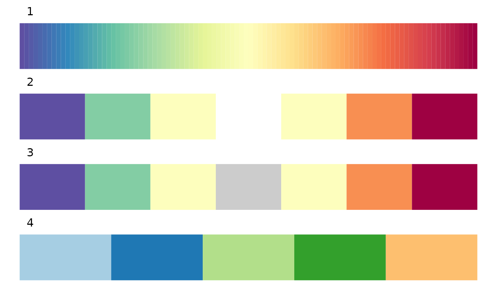
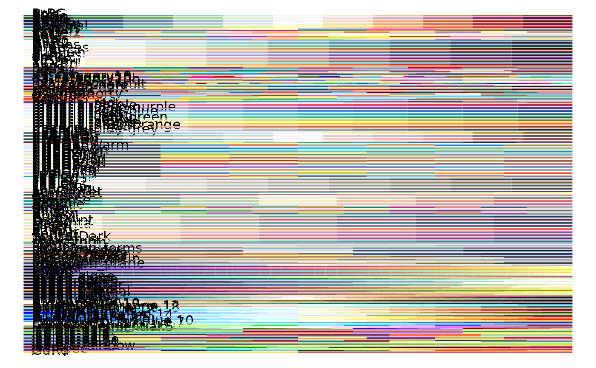

Color palettes collected in SCP.
Usage
palette_scp(
x,
n = 100,
palette = "Paired",
palcolor = NULL,
type = "auto",
matched = FALSE,
reverse = FALSE,
NA_keep = FALSE,
NA_color = "grey80"
)Arguments
- x
A vector of character/factor or numeric values. If missing, numeric values 1:n will be used as x.
- n
The number of colors to return for numeric values.
- palette
Palette name. All available palette names can be queried with
show_palettes().- palcolor
Custom colors used to create a color palette.
- type
Type of
x. Can be one of "auto", "discrete" or "continuous". The default is "auto", which automatically detects ifxis a numeric value.- matched
If
TRUE, will return a color vector of the same length asx.- reverse
Whether to invert the colors.
- NA_keep
Whether to keep the color assignment to NA in
x.- NA_color
Color assigned to NA if NA_keep is
TRUE.
Examples
x <- c(1:3, NA, 3:5)
(pal1 <- palette_scp(x, palette = "Spectral"))
#> [1,1.04] (1.04,1.08] (1.08,1.12] (1.12,1.16] (1.16,1.2] (1.2,1.24] (1.24,1.28] (1.28,1.32] (1.32,1.36] (1.36,1.4]
#> "#5E4FA2" "#5954A4" "#555AA7" "#5060AA" "#4C66AC" "#476BAF" "#4371B2" "#3E77B5" "#3A7DB7" "#3682BA"
#> (1.4,1.44] (1.44,1.48] (1.48,1.52] (1.52,1.56] (1.56,1.6] (1.6,1.64] (1.64,1.68] (1.68,1.72] (1.72,1.76] (1.76,1.8]
#> "#3288BC" "#378EBA" "#3D94B7" "#429AB5" "#47A0B3" "#4CA5B0" "#52ABAE" "#57B1AB" "#5CB7A9" "#61BDA6"
#> (1.8,1.84] (1.84,1.88] (1.88,1.92] (1.92,1.96] (1.96,2] (2,2.04] (2.04,2.08] (2.08,2.12] (2.12,2.16] (2.16,2.2]
#> "#67C2A4" "#6EC5A4" "#75C8A4" "#7CCAA4" "#83CDA4" "#8AD0A4" "#91D2A4" "#98D5A4" "#9FD8A4" "#A6DBA4"
#> (2.2,2.24] (2.24,2.28] (2.28,2.32] (2.32,2.36] (2.36,2.4] (2.4,2.44] (2.44,2.48] (2.48,2.52] (2.52,2.56] (2.56,2.6]
#> "#ACDDA3" "#B2E0A2" "#B8E2A1" "#BEE5A0" "#C4E79E" "#CAE99D" "#D0EC9C" "#D6EE9B" "#DCF199" "#E2F398"
#> (2.6,2.64] (2.64,2.68] (2.68,2.72] (2.72,2.76] (2.76,2.8] (2.8,2.84] (2.84,2.88] (2.88,2.92] (2.92,2.96] (2.96,3]
#> "#E7F599" "#E9F69D" "#ECF7A1" "#EEF8A5" "#F1F9A9" "#F3FAAD" "#F6FBB1" "#F8FCB5" "#FBFDB9" "#FDFEBD"
#> (3,3.04] (3.04,3.08] (3.08,3.12] (3.12,3.16] (3.16,3.2] (3.2,3.24] (3.24,3.28] (3.28,3.32] (3.32,3.36] (3.36,3.4]
#> "#FEFDBC" "#FEFAB7" "#FEF7B1" "#FEF4AC" "#FEF0A7" "#FEEDA2" "#FEEA9C" "#FEE797" "#FEE492" "#FEE18D"
#> (3.4,3.44] (3.44,3.48] (3.48,3.52] (3.52,3.56] (3.56,3.6] (3.6,3.64] (3.64,3.68] (3.68,3.72] (3.72,3.76] (3.76,3.8]
#> "#FDDC88" "#FDD784" "#FDD27F" "#FDCD7B" "#FDC877" "#FDC373" "#FDBE6F" "#FDB96A" "#FDB466" "#FDAF62"
#> (3.8,3.84] (3.84,3.88] (3.88,3.92] (3.92,3.96] (3.96,4] (4,4.04] (4.04,4.08] (4.08,4.12] (4.12,4.16] (4.16,4.2]
#> "#FCA95E" "#FBA25B" "#FA9C58" "#F99555" "#F88F52" "#F7884F" "#F6824C" "#F67B49" "#F57446" "#F46E43"
#> (4.2,4.24] (4.24,4.28] (4.28,4.32] (4.32,4.36] (4.36,4.4] (4.4,4.44] (4.44,4.48] (4.48,4.52] (4.52,4.56] (4.56,4.6]
#> "#F16943" "#EE6445" "#EB5F46" "#E85A47" "#E45648" "#E1514A" "#DE4C4B" "#DB474C" "#D8434D" "#D53E4E"
#> (4.6,4.64] (4.64,4.68] (4.68,4.72] (4.72,4.76] (4.76,4.8] (4.8,4.84] (4.84,4.88] (4.88,4.92] (4.92,4.96] (4.96,5]
#> "#CF384D" "#CA324C" "#C42C4B" "#BF2549" "#B91F48" "#B41947" "#AE1345" "#A90D44" "#A30743" "#9E0142"
(pal2 <- palette_scp(x, palcolor = c("red", "white", "blue")))
#> [1,1.04] (1.04,1.08] (1.08,1.12] (1.12,1.16] (1.16,1.2] (1.2,1.24] (1.24,1.28] (1.28,1.32] (1.32,1.36] (1.36,1.4]
#> "#FF0000" "#FF0505" "#FF0A0A" "#FF0F0F" "#FF1414" "#FF1919" "#FF1E1E" "#FF2424" "#FF2929" "#FF2E2E"
#> (1.4,1.44] (1.44,1.48] (1.48,1.52] (1.52,1.56] (1.56,1.6] (1.6,1.64] (1.64,1.68] (1.68,1.72] (1.72,1.76] (1.76,1.8]
#> "#FF3333" "#FF3838" "#FF3D3D" "#FF4242" "#FF4848" "#FF4D4D" "#FF5252" "#FF5757" "#FF5C5C" "#FF6161"
#> (1.8,1.84] (1.84,1.88] (1.88,1.92] (1.92,1.96] (1.96,2] (2,2.04] (2.04,2.08] (2.08,2.12] (2.12,2.16] (2.16,2.2]
#> "#FF6767" "#FF6C6C" "#FF7171" "#FF7676" "#FF7B7B" "#FF8080" "#FF8585" "#FF8B8B" "#FF9090" "#FF9595"
#> (2.2,2.24] (2.24,2.28] (2.28,2.32] (2.32,2.36] (2.36,2.4] (2.4,2.44] (2.44,2.48] (2.48,2.52] (2.52,2.56] (2.56,2.6]
#> "#FF9A9A" "#FF9F9F" "#FFA4A4" "#FFAAAA" "#FFAFAF" "#FFB4B4" "#FFB9B9" "#FFBEBE" "#FFC3C3" "#FFC8C8"
#> (2.6,2.64] (2.64,2.68] (2.68,2.72] (2.72,2.76] (2.76,2.8] (2.8,2.84] (2.84,2.88] (2.88,2.92] (2.92,2.96] (2.96,3]
#> "#FFCECE" "#FFD3D3" "#FFD8D8" "#FFDDDD" "#FFE2E2" "#FFE7E7" "#FFECEC" "#FFF2F2" "#FFF7F7" "#FFFCFC"
#> (3,3.04] (3.04,3.08] (3.08,3.12] (3.12,3.16] (3.16,3.2] (3.2,3.24] (3.24,3.28] (3.28,3.32] (3.32,3.36] (3.36,3.4]
#> "#FCFCFF" "#F7F7FF" "#F2F2FF" "#ECECFF" "#E7E7FF" "#E2E2FF" "#DDDDFF" "#D8D8FF" "#D3D3FF" "#CECEFF"
#> (3.4,3.44] (3.44,3.48] (3.48,3.52] (3.52,3.56] (3.56,3.6] (3.6,3.64] (3.64,3.68] (3.68,3.72] (3.72,3.76] (3.76,3.8]
#> "#C8C8FF" "#C3C3FF" "#BEBEFF" "#B9B9FF" "#B4B4FF" "#AFAFFF" "#A9A9FF" "#A4A4FF" "#9F9FFF" "#9A9AFF"
#> (3.8,3.84] (3.84,3.88] (3.88,3.92] (3.92,3.96] (3.96,4] (4,4.04] (4.04,4.08] (4.08,4.12] (4.12,4.16] (4.16,4.2]
#> "#9595FF" "#9090FF" "#8B8BFF" "#8585FF" "#8080FF" "#7B7BFF" "#7676FF" "#7171FF" "#6C6CFF" "#6767FF"
#> (4.2,4.24] (4.24,4.28] (4.28,4.32] (4.32,4.36] (4.36,4.4] (4.4,4.44] (4.44,4.48] (4.48,4.52] (4.52,4.56] (4.56,4.6]
#> "#6161FF" "#5C5CFF" "#5757FF" "#5252FF" "#4D4DFF" "#4848FF" "#4242FF" "#3D3DFF" "#3838FF" "#3333FF"
#> (4.6,4.64] (4.64,4.68] (4.68,4.72] (4.72,4.76] (4.76,4.8] (4.8,4.84] (4.84,4.88] (4.88,4.92] (4.92,4.96] (4.96,5]
#> "#2E2EFF" "#2929FF" "#2424FF" "#1E1EFF" "#1919FF" "#1414FF" "#0F0FFF" "#0A0AFF" "#0505FF" "#0000FF"
(pal3 <- palette_scp(x, palette = "Spectral", n = 10))
#> [1,1.4] (1.4,1.8] (1.8,2.2] (2.2,2.6] (2.6,3] (3,3.4] (3.4,3.8] (3.8,4.2] (4.2,4.6] (4.6,5]
#> "#5E4FA2" "#3288BD" "#66C2A5" "#ABDDA4" "#E6F598" "#FFFFBF" "#FEE08B" "#FDAE61" "#F46D43" "#D53E4F"
(pal4 <- palette_scp(x, palette = "Spectral", n = 10, reverse = TRUE))
#> (4.6,5] (4.2,4.6] (3.8,4.2] (3.4,3.8] (3,3.4] (2.6,3] (2.2,2.6] (1.8,2.2] (1.4,1.8] [1,1.4]
#> "#D53E4F" "#F46D43" "#FDAE61" "#FEE08B" "#FFFFBF" "#E6F598" "#ABDDA4" "#66C2A5" "#3288BD" "#5E4FA2"
(pal5 <- palette_scp(x, palette = "Spectral", matched = TRUE))
#> [1,1.04] (1.96,2] (2.96,3] <NA> (2.96,3] (3.96,4] (4.96,5]
#> "#5E4FA2" "#83CDA4" "#FDFEBD" NA "#FDFEBD" "#F88F52" "#9E0142"
(pal6 <- palette_scp(x, palette = "Spectral", matched = TRUE, NA_keep = TRUE))
#> [1,1.04] (1.96,2] (2.96,3] <NA> (2.96,3] (3.96,4] (4.96,5]
#> "#5E4FA2" "#83CDA4" "#FDFEBD" "grey80" "#FDFEBD" "#F88F52" "#9E0142"
(pal7 <- palette_scp(x, palette = "Paired", type = "discrete"))
#> 1 2 3 4 5
#> "#A6CEE3" "#1F78B4" "#B2DF8A" "#33A02C" "#FDBF6F"
show_palettes(list(pal1, pal2, pal3, pal4, pal5, pal6, pal7))

#> [1] "1" "2" "3" "4" "5" "6" "7"
all_palettes <- show_palettes(return_palettes = TRUE)

names(all_palettes)
#> [1] "BrBG" "PiYG" "PRGn" "PuOr"
#> [5] "RdBu" "RdGy" "RdYlBu" "RdYlGn"
#> [9] "Spectral" "Accent" "Dark2" "Paired"
#> [13] "Pastel1" "Pastel2" "Set1" "Set2"
#> [17] "Set3" "Blues" "BuGn" "BuPu"
#> [21] "GnBu" "Greens" "Greys" "Oranges"
#> [25] "OrRd" "PuBu" "PuBuGn" "PuRd"
#> [29] "Purples" "RdPu" "Reds" "YlGn"
#> [33] "YlGnBu" "YlOrBr" "YlOrRd" "npg"
#> [37] "aaas" "nejm" "lancet" "jama"
#> [41] "jco" "ucscgb" "d3-category10" "d3-category20"
#> [45] "d3-category20b" "d3-category20c" "igv" "locuszoom"
#> [49] "uchicago-default" "uchicago-light" "uchicago-dark" "simpsons"
#> [53] "futurama" "rickandmorty" "startrek" "tron"
#> [57] "gsea" "material-red" "material-pink" "material-purple"
#> [61] "material-deep-purple" "material-indigo" "material-blue" "material-light-blue"
#> [65] "material-cyan" "material-teal" "material-green" "material-light-green"
#> [69] "material-lime" "material-yellow" "material-amber" "material-orange"
#> [73] "material-deep-orange" "material-brown" "material-grey" "material-blue-grey"
#> [77] "dPBIYlBu" "dPBIYlPu" "dPBIPuGn" "dPBIPuOr"
#> [81] "dPBIRdBu" "dPBIRdGy" "dPBIRdGn" "qMSOStd"
#> [85] "qMSO12" "qMSO15" "qMSOBuWarm" "qMSOBu"
#> [89] "qMSOBu2" "qMSOBuGn" "qMSOGn" "qMSOGnYl"
#> [93] "qMSOYl" "qMSOYlOr" "qMSOOr" "qMSOOrRd"
#> [97] "qMSORdOr" "qMSORd" "qMSORdPu" "qMSOPu"
#> [101] "qMSOPu2" "qMSOMed" "qMSOPap" "qMSOMrq"
#> [105] "qMSOSlp" "qMSOAsp" "qPBI" "sPBIGn"
#> [109] "sPBIGy1" "sPBIRd" "sPBIYl" "sPBIGy2"
#> [113] "sPBIBu" "sPBIOr" "sPBIPu" "sPBIYlGn"
#> [117] "sPBIRdPu" "ag_GrnYl" "ag_Sunset" "ArmyRose"
#> [121] "Earth" "Fall" "Geyser" "TealRose"
#> [125] "Temps" "Tropic" "Antique" "Bold"
#> [129] "Pastel" "Prism" "Safe" "Vivid"
#> [133] "BluGrn" "BluYl" "BrwnYl" "Burg"
#> [137] "BurgYl" "DarkMint" "Emrld" "Magenta"
#> [141] "Mint" "OrYel" "Peach" "PinkYl"
#> [145] "Purp" "PurpOr" "RedOr" "Sunset"
#> [149] "SunsetDark" "Teal" "TealGrn" "polarnight"
#> [153] "snowstorm" "frost" "aurora" "lumina"
#> [157] "mountain_forms" "silver_mine" "lake_superior" "victory_bonds"
#> [161] "halifax_harbor" "moose_pond" "algoma_forest" "rocky_mountain"
#> [165] "red_mountain" "baie_mouton" "afternoon_prarie" "magma"
#> [169] "inferno" "plasma" "viridis" "cividis"
#> [173] "rocket" "mako" "turbo" "ocean.algae"
#> [177] "ocean.deep" "ocean.dense" "ocean.gray" "ocean.haline"
#> [181] "ocean.ice" "ocean.matter" "ocean.oxy" "ocean.phase"
#> [185] "ocean.solar" "ocean.thermal" "ocean.turbid" "ocean.balance"
#> [189] "ocean.curl" "ocean.delta" "ocean.amp" "ocean.speed"
#> [193] "ocean.tempo" "BrowntoBlue.10" "BrowntoBlue.12" "BluetoDarkOrange.12"
#> [197] "BluetoDarkOrange.18" "DarkRedtoBlue.12" "DarkRedtoBlue.18" "BluetoGreen.14"
#> [201] "BluetoGray.8" "BluetoOrangeRed.14" "BluetoOrange.10" "BluetoOrange.12"
#> [205] "BluetoOrange.8" "LightBluetoDarkBlue.10" "LightBluetoDarkBlue.7" "Categorical.12"
#> [209] "GreentoMagenta.16" "SteppedSequential.5" "jcolors-default" "jcolors-pal2"
#> [213] "jcolors-pal3" "jcolors-pal4" "jcolors-pal5" "jcolors-pal6"
#> [217] "jcolors-pal7" "jcolors-pal8" "jcolors-pal9" "jcolors-pal10"
#> [221] "jcolors-pal11" "jcolors-pal12" "jcolors-rainbow" "jet"
#> [225] "simspec"
if (FALSE) {
if (interactive()) {
check_R(c("stringr", "RColorBrewer", "ggsci", "Redmonder", "rcartocolor", "nord", "viridis", "pals", "oompaBase", "dichromat", "jcolors"))
library(stringr)
library(RColorBrewer)
library(ggsci)
library(Redmonder)
library(rcartocolor)
library(nord)
library(viridis)
library(pals)
library(dichromat)
library(jcolors)
brewer.pal.info <- RColorBrewer::brewer.pal.info
ggsci_db <- ggsci:::ggsci_db
redmonder.pal.info <- Redmonder::redmonder.pal.info
metacartocolors <- rcartocolor::metacartocolors
rownames(metacartocolors) <- metacartocolors$Name
nord_palettes <- nord::nord_palettes
viridis_names <- c("magma", "inferno", "plasma", "viridis", "cividis", "rocket", "mako", "turbo")
viridis_palettes <- lapply(setNames(viridis_names, viridis_names), function(x) viridis::viridis(100, option = x))
ocean_names <- names(pals:::syspals)[grep("ocean", names(pals:::syspals))]
ocean_palettes <- pals:::syspals[ocean_names]
dichromat_palettes <- dichromat::colorschemes
jcolors_names <- paste0("jcolors-", c("default", "pal2", "pal3", "pal4", "pal5", "pal6", "pal7", "pal8", "pal9", "pal10", "pal11", "pal12", "rainbow"))
custom_names <- c("jet", "simspec")
custom_palettes <- list(
oompaBase::jetColors(N = 100),
c("#c22b86", "#f769a1", "#fcc5c1", "#253777", "#1d92c0", "#9ec9e1", "#015b33", "#42aa5e", "#d9f0a2", "#E66F00", "#f18c28", "#FFBB61")
)
names(custom_palettes) <- custom_names
palette_list <- list()
all_colors <- c(
rownames(brewer.pal.info), names(ggsci_db), rownames(redmonder.pal.info),
rownames(metacartocolors), names(nord_palettes), names(viridis_palettes),
ocean_names, names(dichromat_palettes), jcolors_names,
custom_names
)
for (pal in all_colors) {
if (!pal %in% all_colors) {
stop(paste0("Invalid pal Must be one of ", paste0(all_colors, collapse = ",")))
}
if (pal %in% rownames(brewer.pal.info)) {
pal_n <- brewer.pal.info[pal, "maxcolors"]
pal_category <- brewer.pal.info[pal, "category"]
if (pal_category == "div") {
palcolor <- rev(brewer.pal(name = pal, n = pal_n))
} else {
if (pal == "Paired") {
palcolor <- brewer.pal(12, "Paired")[c(1:4, 7, 8, 5, 6, 9, 10, 11, 12)]
} else {
palcolor <- brewer.pal(name = pal, n = pal_n)
}
}
if (pal_category == "qual") {
attr(palcolor, "type") <- "discrete"
} else {
attr(palcolor, "type") <- "continuous"
}
} else if (pal %in% names(ggsci_db)) {
if (pal %in% c("d3", "uchicago", "material")) {
for (subpal in names(ggsci_db[[pal]])) {
palcolor <- ggsci_db[[pal]][[subpal]]
if (pal == "material") {
attr(palcolor, "type") <- "continuous"
} else {
attr(palcolor, "type") <- "discrete"
}
palette_list[[paste0(pal, "-", subpal)]] <- palcolor
}
next
} else {
palcolor <- ggsci_db[[pal]][[1]]
if (pal == "gsea") {
attr(palcolor, "type") <- "continuous"
} else {
attr(palcolor, "type") <- "discrete"
}
}
} else if (pal %in% rownames(redmonder.pal.info)) {
pal_n <- redmonder.pal.info[pal, "maxcolors"]
pal_category <- redmonder.pal.info[pal, "category"]
if (pal_category == "div") {
palcolor <- rev(redmonder.pal(name = pal, n = pal_n))
} else {
palcolor <- redmonder.pal(name = pal, n = pal_n)
}
if (pal_category == "qual") {
attr(palcolor, "type") <- "discrete"
} else {
attr(palcolor, "type") <- "continuous"
}
} else if (pal %in% rownames(metacartocolors)) {
pal_n <- metacartocolors[pal, "Max_n"]
palcolor <- carto_pal(name = pal, n = pal_n)
if (pal_category == "qualitative") {
attr(palcolor, "type") <- "discrete"
} else {
attr(palcolor, "type") <- "continuous"
}
} else if (pal %in% names(nord_palettes)) {
palcolor <- nord_palettes[[pal]]
attr(palcolor, "type") <- "discrete"
} else if (pal %in% names(viridis_palettes)) {
palcolor <- viridis_palettes[[pal]]
attr(palcolor, "type") <- "continuous"
} else if (pal %in% names(ocean_palettes)) {
palcolor <- ocean_palettes[[pal]]
attr(palcolor, "type") <- "continuous"
} else if (pal %in% names(dichromat_palettes)) {
palcolor <- dichromat_palettes[[pal]]
if (pal %in% c("Categorical.12", "SteppedSequential.5")) {
attr(palcolor, "type") <- "discrete"
} else {
attr(palcolor, "type") <- "continuous"
}
} else if (pal %in% jcolors_names) {
palcolor <- jcolors(palette = gsub("jcolors-", "", pal))
if (pal %in% paste0("jcolors-", c("pal10", "pal11", "pal12", "rainbow"))) {
attr(palcolor, "type") <- "continuous"
} else {
attr(palcolor, "type") <- "discrete"
}
} else if (pal %in% custom_names) {
palcolor <- custom_palettes[[pal]]
if (pal %in% c("jet")) {
attr(palcolor, "type") <- "continuous"
} else {
attr(palcolor, "type") <- "discrete"
}
}
palette_list[[pal]] <- palcolor
}
# usethis::use_data(palette_list, internal = TRUE)
}
}